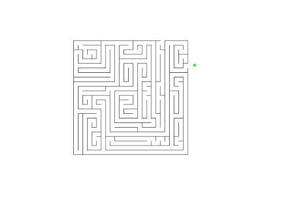

|
Fruit Cutta is a Fruit Ninja inspired game where you try to hit the falling fruit before it goes out of frame. The more you hit the more points you receive. But be careful, there will be explosive devices also thrown which you will have to avoid. If you hit one of these your points will be lost and it will read “Game Over”. There are also special types of fruits that give you different abilities. |
|  | A simple maze game with multiple levels ranging in difficulty but enemies will spawn randomly. You have to try to avoid these mobs and be careful not to get trapped in a corner. When eliminated you respawn back at the start of the maze. There are also “amplifiers” which give you different powers in the form of fruits. |